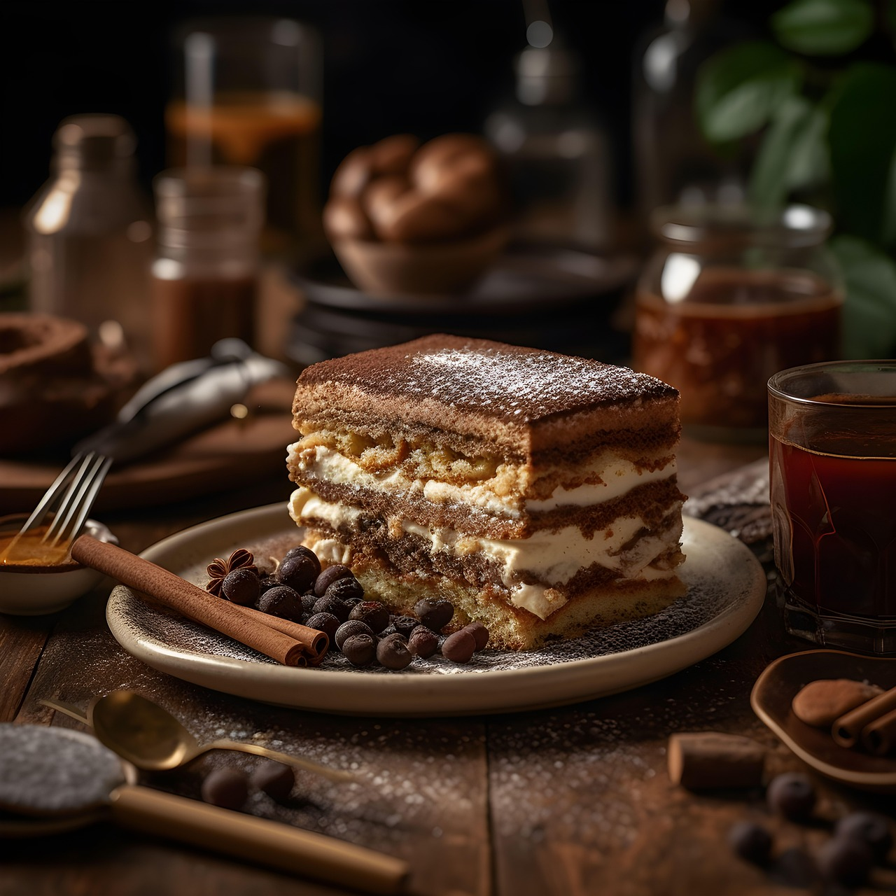
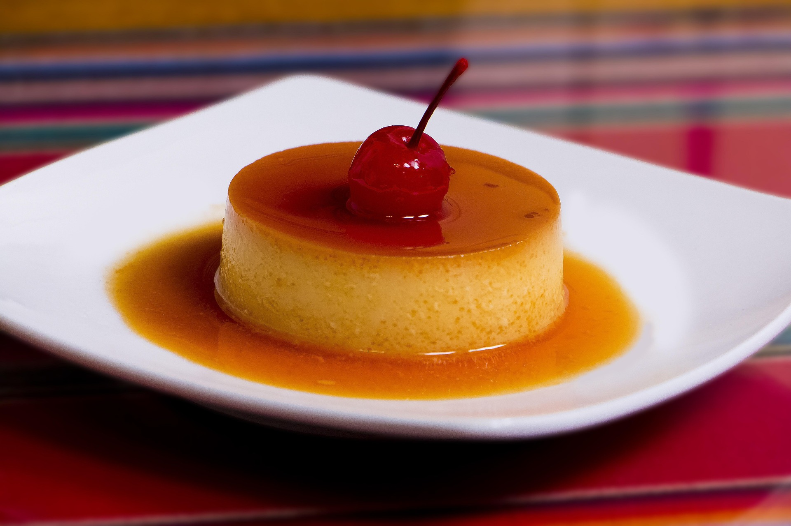
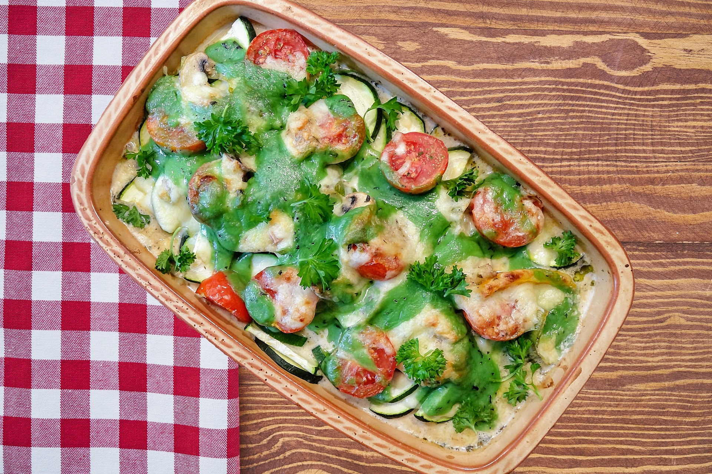
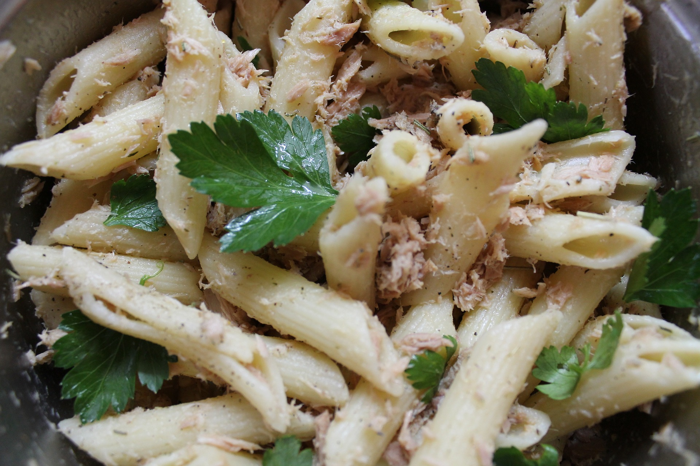

Brioche perdue
5.0(73)
par John Keller

Le tiramisu est un dessert italien onctueux et gourmand, composé de biscuits imbibés de café, d’une crème légère au mascarpone et saupoudré de cacao. Facile à préparer, il est idéal pour terminer un repas sur une note douce et raffinée.
30 min
4h30
6 personnes
Séparer les blancs des jaunes d’œufs. Dans un saladier, fouetter les jaunes avec le sucre et le sucre vanillé jusqu’à obtenir un mélange clair et mousseux.
Ajouter le mascarpone au mélange jaunes-sucre puis mélanger jusqu’à obtenir une crème lisse et homogène.
Ajouter une pincée de sel aux blancs d’œufs puis les battre en neige ferme. Les incorporer délicatement à la préparation au mascarpone à l’aide d’une spatule pour garder une texture aérienne.
Tremper rapidement les biscuits dans le café refroidi sans trop les imbiber. Disposer une première couche de biscuits au fond du plat. Ajouter une couche de crème mascarpone. Répéter l’opération jusqu’à épuisement des ingrédients en terminant par la crème.
Saupoudrer généreusement le dessus avec le cacao en poudre. Placer le tiramisu au réfrigérateur pendant au moins 4 heures avant dégustation pour qu’il soit bien frais et fondant.
par John Keller

par Danial Caleem

par Janet Small

par Alexa Dorchest

par Ben Kaller

par Sam Brown

par Theresa Samuel
par Adam Brown
Alice Thomson
12 days ago
J’ai testé cette recette ce week-end et le résultat était excellent. La crème était légère, bien équilibrée en sucre et très onctueuse. C’est clairement un dessert que je referai pour mes invités.
Tom Solender
12 days ago
Recette simple à réaliser même pour quelqu’un qui débute en cuisine. Les biscuits étaient parfaitement imbibés et le goût du café ressortait très bien. Tout le monde à table a adoré ce tiramisu.
Sophie Thomson
12 days ago
Ce tiramisu était vraiment délicieux et très facile à préparer. La texture était fondante avec une crème bien légère et savoureuse. Après quelques heures au frais, le dessert était encore meilleur.